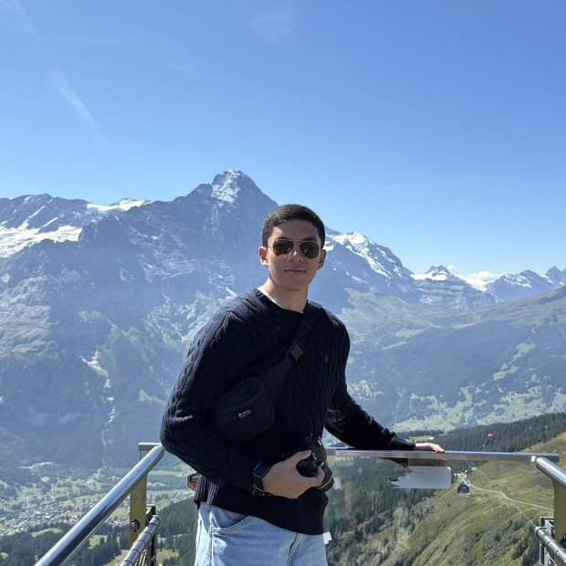

Ibrahim Khawar
Welcome to my crevice of the interwebs. I'm Ibrahim. Nice to meet you!
I like to optimize for excellence. To me, this means directing my habits, projects, standards, and environment toward becoming better each day. It means learning through failure to sharpen my ability, depth, and character so success becomes a byproduct rather than the goal.
In high school, I did a variety of things. When I was 14, I interned at LogiSense as a software engineer, where much of my work revolved around data onboarding. After this internship, I founded a tech startup called Tablingos. The core product was a SaaS through which businesses could easily create secure data pipelines for normalization and integration. I received funding from Microsoft to pursue this venture.
I then became increasingly interested in how technology could directly improve human lives. I worked in Dr. Jan Andrysek's PROPEL Lab as a software engineer and researcher. I developed an algorithm for an iOS app to enable accurate out-of-clinic gait monitoring and rehabilitation. Being a part of a team dedicated to empowering people with independence was a deeply transformative experience.
After spending time with mobility technology, I built an iOS app called Pocket Prosthetic capable of scanning residual limbs with mobile LiDAR to ultimately produce molds for fitted prosthetics. I won Toronto's largest hackathon, Hack the 6ix, with this project.
I've also interned at Nokia as a software engineer on their security team. I am now a Schulich Scholar studying Engineering Science at the University of Toronto.
Outside of this, I enjoy watching theatre, acting in theatre, photography, MMA, swimming, magic tricks, bodybuilding, and being happy.

In the long run I want to:
- work on technology that empowers people to do good
- build safe, interpretable AGI
- understand how the universe works
- maximize human healthspan
- learn from and work with cool people who love life
- act on Broadway